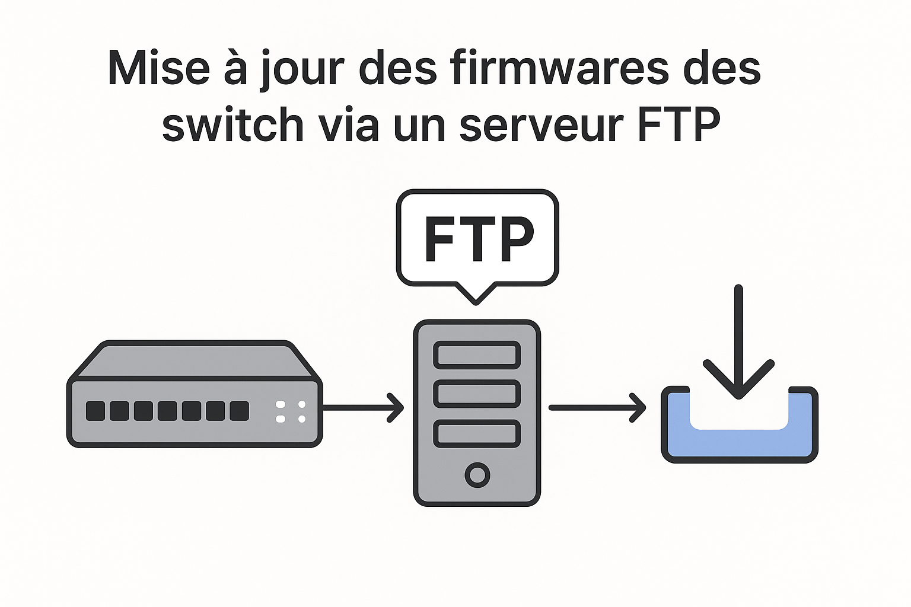
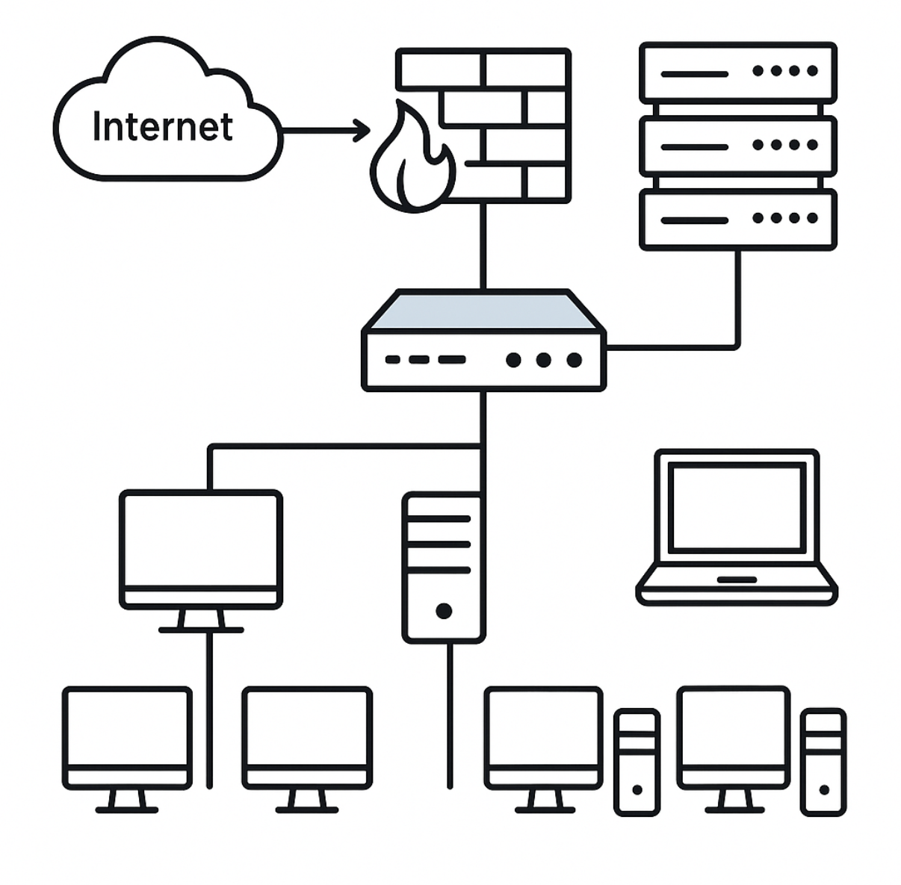

Mon parcours m'a permis de combiner connaissances théoriques et expérience pratique, me préparant efficacement aux exigences professionnelles dans le domaine informatique.
Certifications
Pix
Évaluation et certification des compétences numériques.
SecNumacadémie
Cybersécurité et bonnes pratiques IT.
Les basiques du SI | Cyber&CO
Compréhension des fondamentaux des systèmes d'information et de leur sécurité.
-
-
Projets
-
Mes projets
-
-
-

-
Active Directory
-
Mise en place d’un contrôleur de domaine fonctionnel sur Windows server 2019
Je suis régulièrement l’actualité sur la cybersécurité, l’intelligence artificielle et les innovations IT. Cette veille me permet de rester à jour sur les meilleures pratiques et les nouvelles menaces dans le domaine des systèmes d’information.
-
-
Flux RSS
-
LinkedIn
-
-
+
+
Veille technologique
+
Sujet principal : Cybersécurité des infrastructures (réseau, systèmes Windows/Linux, gestion des identités).
+
Ma veille technologique me permet d’identifier les nouvelles menaces, de suivre les bonnes pratiques de durcissement et d’appliquer des améliorations concrètes dans mes projets BTS SIO SISR.
+
+
+
Objectifs
+
Comprendre les vulnérabilités récentes, apprendre les méthodes de protection et anticiper les risques pour les SI.
Ces épreuves m'ont permis de consolider mes connaissances théoriques et pratiques, notamment dans la gestion des infrastructures réseau et la sécurisation des systèmes. Chaque projet m'aamelioré mes comptenacne pour le métier d'administrateur système et réseau.

E6 – Administration
Gestion et maintenance des infrastructures réseau, configuration des serveurs et résolution des incidents techniques.

{kind=link}